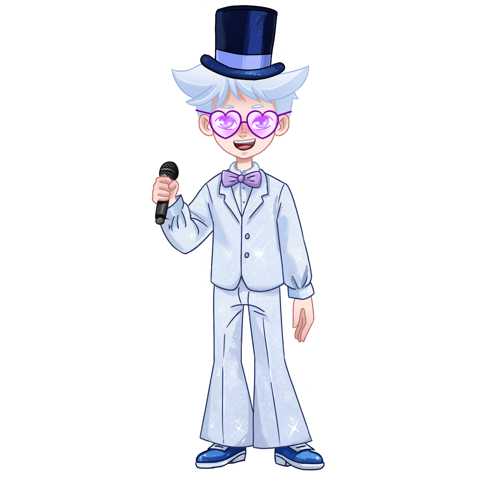
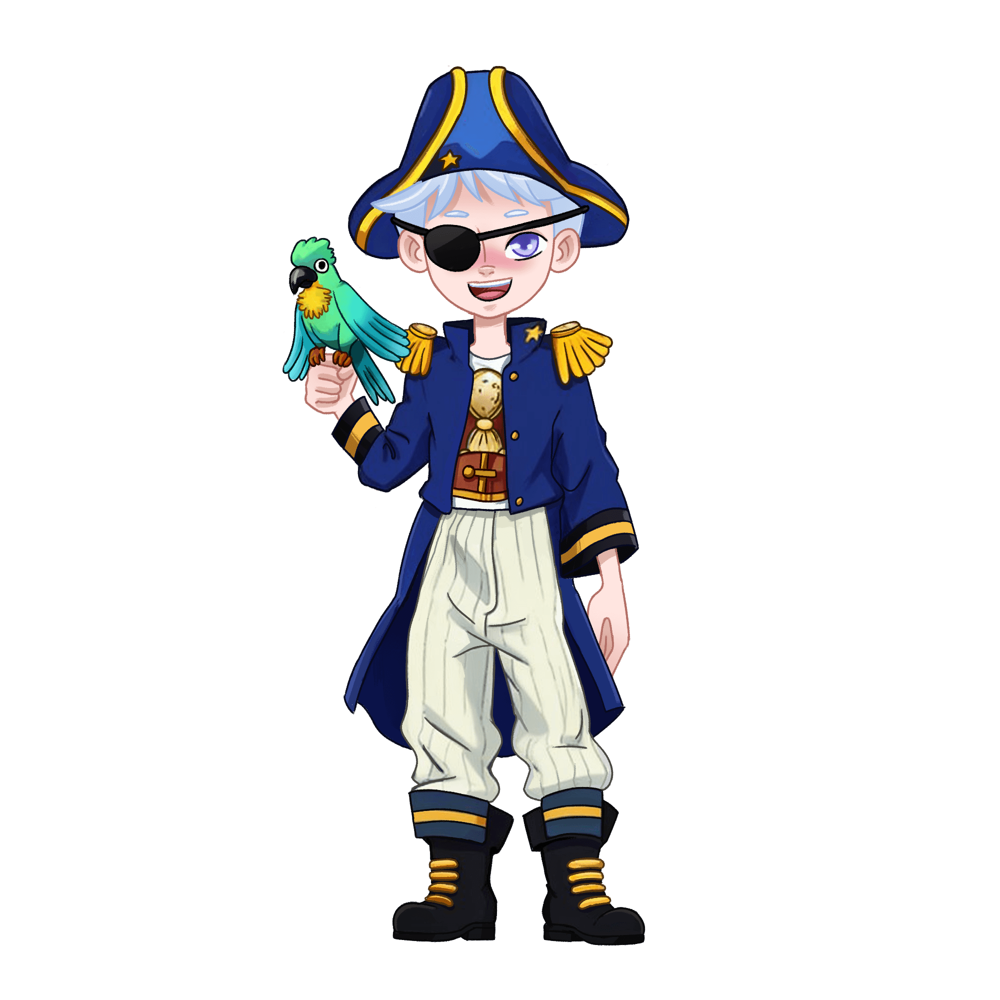
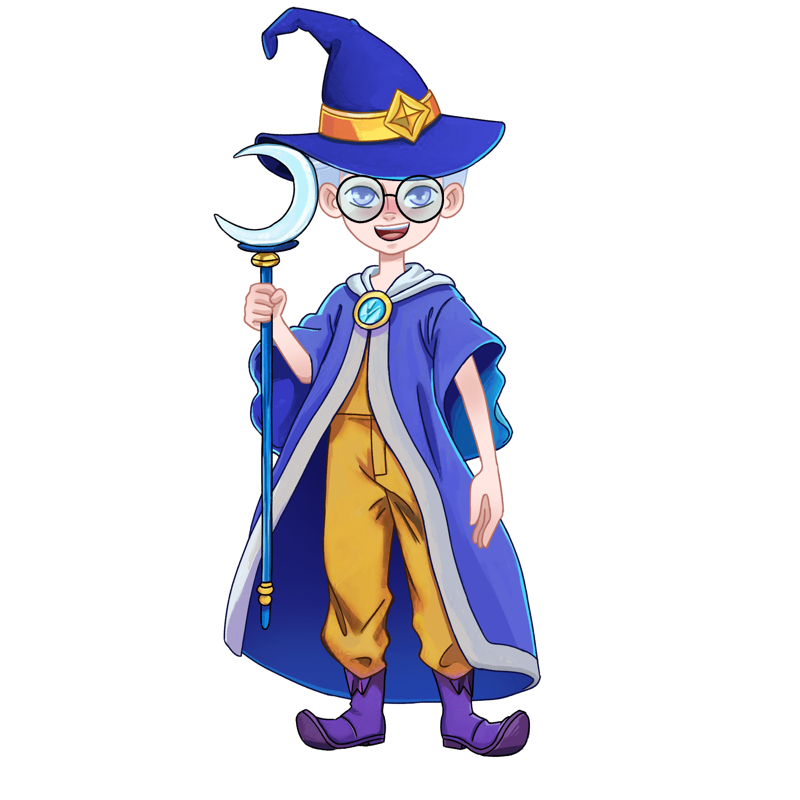

Выбери в каком образе наш герой Кир тебе больше нравится



Кир — Начинающий Волшебник
Энергичный и смелый, он уверенно ведёт свою команду к цели – открытию нового
континента. На его корабле все знают свои обязанности. Ему отлично удается управлять командой, он настроен на
победу и будущий успех, но не любит, когда с ним спорят и не соглашаются.